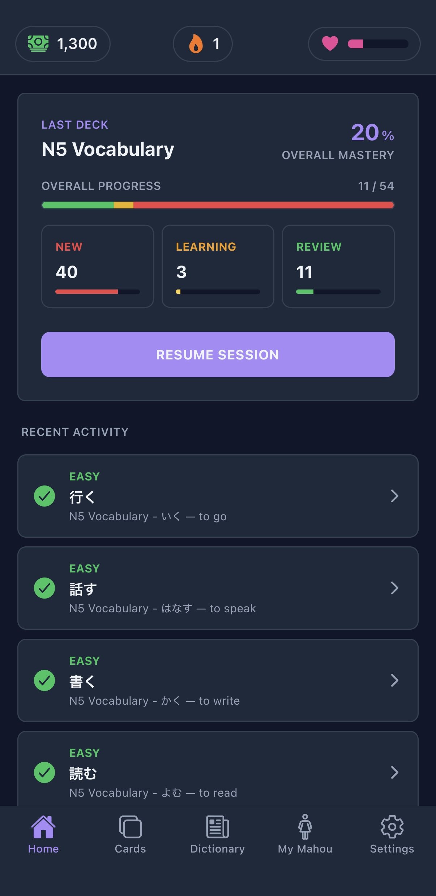

Mahou
Learning
A Japanese language learning experience centred on practice, progress, and the small moments that make studying feel rewarding.

- The idea
- Japanese language learning that makes practice feel approachable.
- What I built
- A learning interface focused on usability and engagement.
- Approach
- UI/UX, gamification, and interactive learning loops.
- Exploring
- How a learning interface can support retention and ease of use.